Express + session + DynamoDB + Cognito
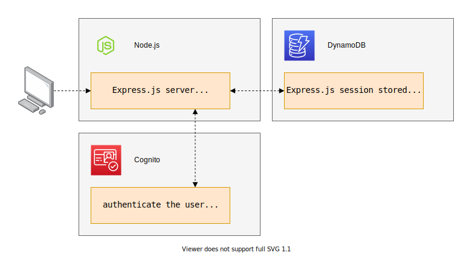
Install and setup the application
Get the code from this github repository :
# download the code
$ git clone \
--depth 1 \
https://github.com/jeromedecoster/aws-express-session-dynamodb-cognito.git \
/tmp/aws
# cd + install
$ cd /tmp/aws && npm install
To setup the project, you must edit the settings file first :
$ cat settings.sample.sh
# Project
AWS_ID=
USER_NAME=
ACCESS_KEY_ID=
SECRET_ACCESS_KEY=
AWS_REGION=eu-west-3
# DYNAMOD_DB
TABLE_NAME=aws-express-session-dynamodb-cognito
# COGNITO
COGNITO_REGION=eu-west-1
POOL_NAME=aws-express-session-dynamodb-cognito
POOL_ID=
CLIENT_ID=
You can change some values, but the most important thing is to choose your regions. The default values are :
- AWS_REGION :
eu-west-3 - COGNITO_REGION :
eu-west-1
Please note that Cognito is not available in all regions. This is why we have 2 different regions above.
After that you can execute the 1-setup.sh script :
# execute the setup
$ ./1-setup.sh
This will create an IAM User with AWS CLI :
USER_NAME=aws-dynamodb-cognito-$(cat /dev/urandom | tr -dc 'a-z' | fold -w 6 | head -n 1)
echo 'iam create-user'
aws iam create-user \
--user-name $USER_NAME
# ...
This will attach an inline policy to restrict this user’s access to a single DynamoDB database :
{
"Version": "2012-10-17",
"Statement": [
{
"Effect": "Allow",
"Action": [
"dynamodb:*"
],
"Resource": "arn:aws:dynamodb:<aws-region>:<aws-id>:table/<table-name>"
}
]
}
And this will create the settings.sh file :
# ...
sed --expression "s|AWS_ID=.*$|AWS_ID=$AWS_ID|" \
--expression "s|USER_NAME=.*$|USER_NAME=$USER_NAME|" \
--expression "s|ACCESS_KEY_ID=.*$|ACCESS_KEY_ID=$ACCESS_KEY_ID|" \
--expression "s|SECRET_ACCESS_KEY=.*$|SECRET_ACCESS_KEY=$SECRET_ACCESS_KEY|" \
settings.sample.sh \
> settings.sh
Storing sessions in DynamoDB
We use the middleware dynamodb-store.
If you look at with-dynamodb-store.js, the code is really simple :
// set variables from `settings.sh` into `process.env`
env(path.join(__dirname, 'settings.sh'))
// define the DynamDBStore options
const options = {
table: {
name: process.env.TABLE_NAME,
hashKey: 'id',
hashPrefix: '',
readCapacityUnits: 2,
writeCapacityUnits: 2
},
dynamoConfig: {
accessKeyId: process.env.ACCESS_KEY_ID,
secretAccessKey: process.env.SECRET_ACCESS_KEY,
region: process.env.AWS_REGION,
endpoint: 'http://dynamodb.' + process.env.AWS_REGION + '.amazonaws.com'
},
keepExpired: false,
touchInterval: 30000,
ttl: 8000 // 8 seconds
}
// setup the `express-session` middleware with the `store`
app.use(expresssession({
name: 'session',
secret: `secret-${Math.random().toString().substr(7)}`,
/*
* Forces a session that is "uninitialized" to be saved to the store.
* A session is uninitialized when it is new but not modified.
* Choosing false is useful for implementing login sessions, reducing server storage
* usage, or complying with laws that require permission before setting a cookie.
* The default value is true.
*/
saveUninitialized: false,
/*
* Forces the session to be saved back to the session store, even if
* the session was never modified during the request.
* The default value is true, but using the default has been deprecated,
* as the default will change in the future.
* Typically, you'll want false.
*/
resave: false,
store: new DynamDBStore(options)
}))
Let’s start the server :
# start the server
$ node with-dynamodb-store
The dynamodb-store middleware creates the table if it is missing.
If we go to our DynamoDB console we can see the table created :
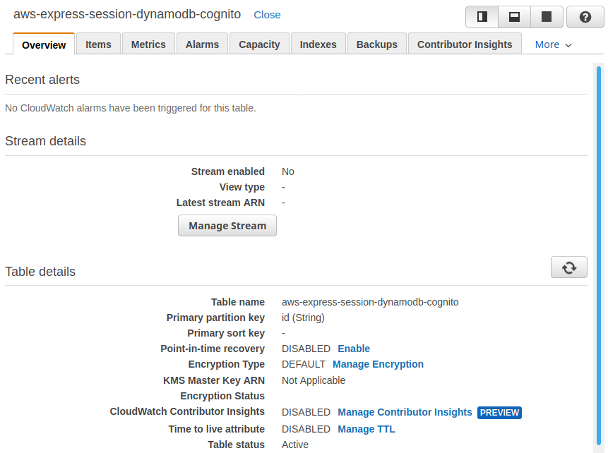
Important : the middleware defined the expires attribute to manage time-to-live, but it is not activated on the table. You can see it in the screenshot above :
- Time to live attribute :
DISABLED
We will activate the TTL from the terminal :
# get the variables
$ source settings.sh
# confirm the current state
$ aws dynamodb describe-time-to-live \
--table-name $TABLE_NAME
{
"TimeToLiveDescription": {
"TimeToLiveStatus": "DISABLED"
}
}
# define the TTL
$ aws dynamodb update-time-to-live \
--table-name $TABLE_NAME \
--time-to-live-specification Enabled=true,AttributeName=expires
{
"TimeToLiveSpecification": {
"Enabled": true,
"AttributeName": "expires"
}
}
If we reload the console, the state must have changed :
- Time to live attribute :
expires
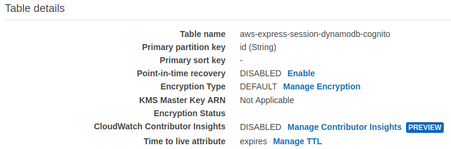
If you open localhost:3000 you should see this homepage :
- The
req.cookiesvalue contains a hash identifier - The
req.session.datahas the default values
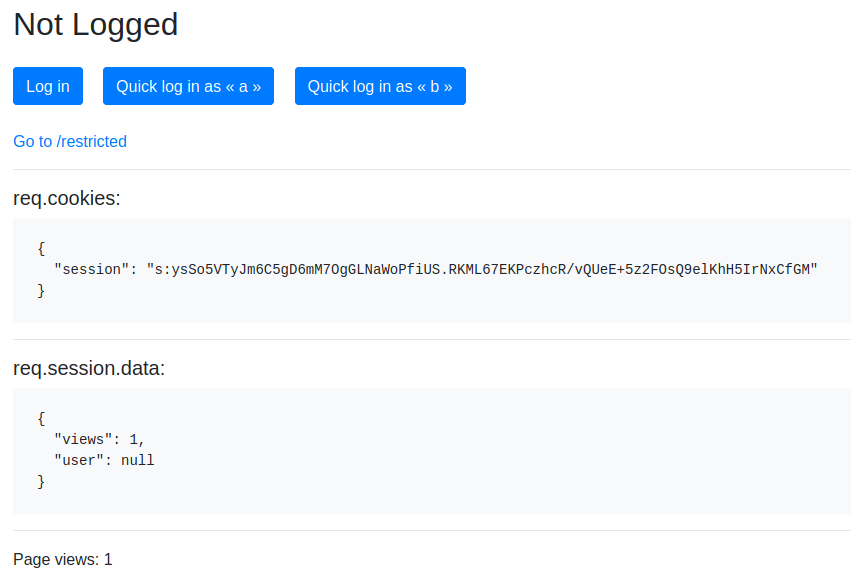
If we click the Quick log in as « a » button we can now see the logged homepage :
- The
req.session.datais updated
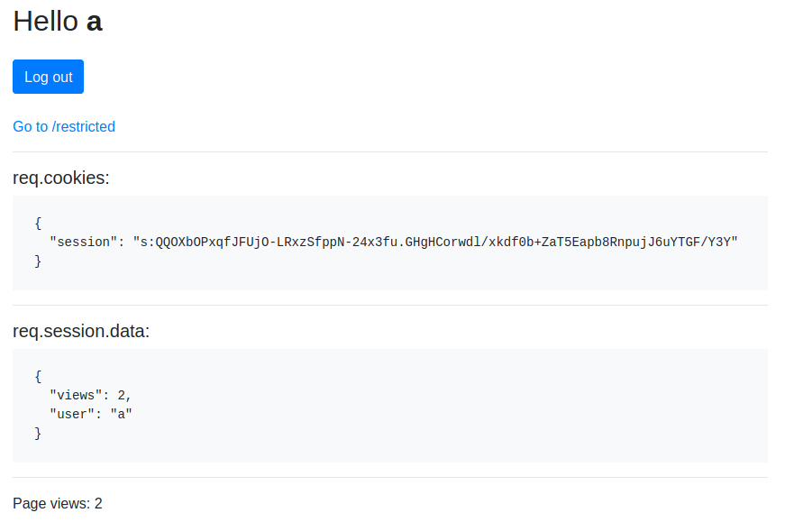
If we click the Go to /rectricted link, we could see this logged /restricted page :
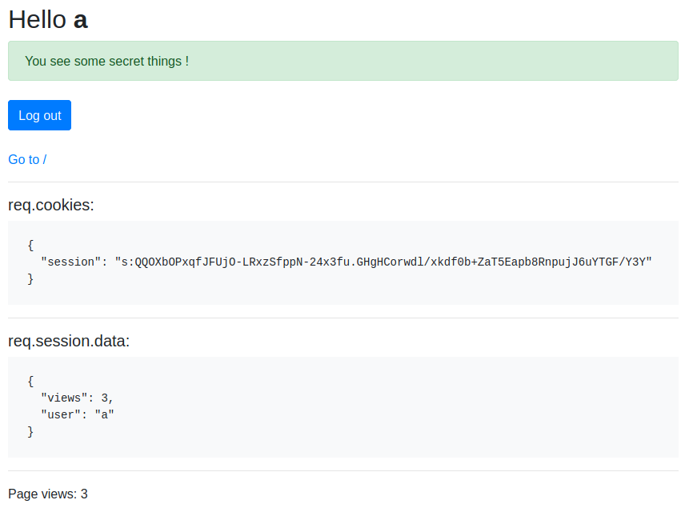
We can see the session item stored in DynamoDB :
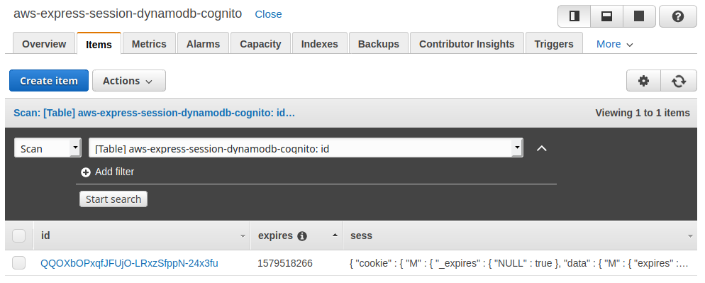
We can click the item id to view its content :
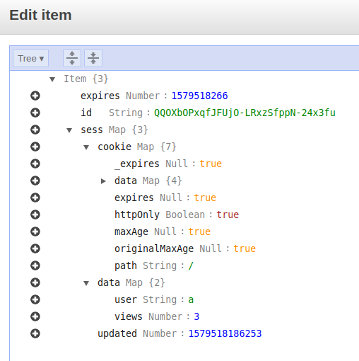
Important : you can play with this demo site in different browsers (regular and incognito mode) and see the different sessions.
Creating the Cognito User Pool
Now we can execute the 2-cognito.sh script :
# execute the setup
$ ./2-cognito.sh
This will create a User Pool and a App Client with AWS CLI :
source settings.sh
# create the user pool
aws cognito-idp create-user-pool \
--region $COGNITO_REGION \
--pool-name $POOL_NAME \
--auto-verified-attributes email \
--alias-attributes email \
--policies "PasswordPolicy={MinimumLength=6,RequireUppercase=false,\
RequireLowercase=true,RequireNumbers=false,RequireSymbols=false}"
# create the app client
aws cognito-idp create-user-pool-client \
--region $COGNITO_REGION \
--user-pool-id $POOL_ID \
--client-name $POOL_NAME-client \
--explicit-auth-flows ALLOW_ADMIN_USER_PASSWORD_AUTH \
ALLOW_CUSTOM_AUTH \
ALLOW_USER_PASSWORD_AUTH \
ALLOW_USER_SRP_AUTH \
ALLOW_REFRESH_TOKEN_AUTH
# ...
The User Pool and the App Client are created :
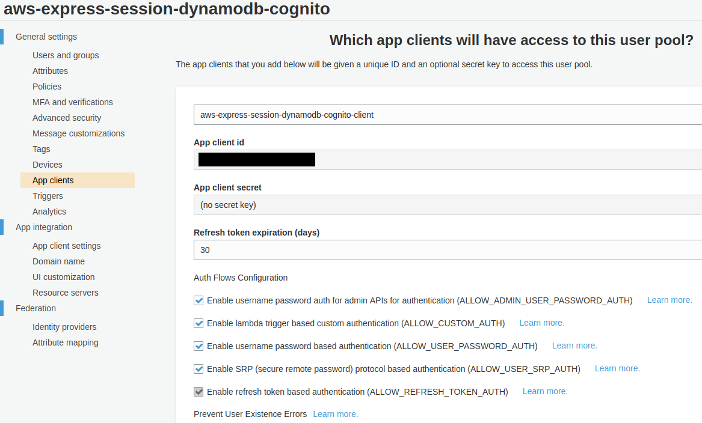
The script also creates 2 confirmed users (thanks for these tips) :
# create the user : username=a password=aaaaaa email=a@a.com
aws cognito-idp admin-create-user \
--region $COGNITO_REGION \
--user-pool-id $POOL_ID \
--username a \
--temporary-password aaaaaa \
--user-attributes=Name=email,Value=a@a.com
# ...
# confirm the user with the challenge
aws cognito-idp admin-respond-to-auth-challenge \
--region $COGNITO_REGION \
--user-pool-id $POOL_ID \
--client-id $CLIENT_ID \
--challenge-name NEW_PASSWORD_REQUIRED \
--challenge-responses NEW_PASSWORD=aaaaaa,USERNAME=a \
--session "$SESSION"
The users are created with the status CONFIRMED :
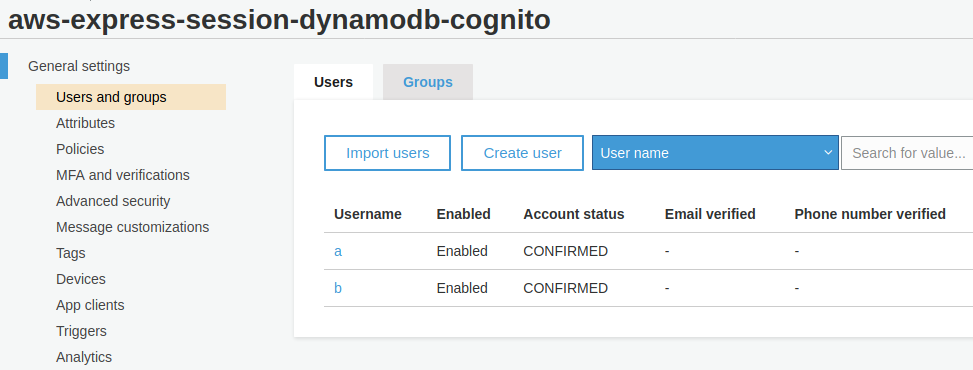
Managing users with Cognito
We use the module amazon-cognito-identity-js. This also requires the node-fetch module.
Take a look at with-dynamodb-cognito.js :
The User Pool and User are stored by username in an object.
This is a quick and dirty way to store sessions in the server side. You probably want to do something like :
- Stormpath : where to Store your JWTs ? (spoiler alert : in cookies).
- Stackoverflow : send the JWT token to the client side and store it in the web browser.
// quick and dirty pools :
// One `User Pool` and one `User` stored by `username` to
// store all sessions on the server
const pools = {}
function getUserPool(username, password) {
if (pools[username] == null) {
let userPool = new CognitoUserPool(poolData)
let cognitoUser = new CognitoUser({
Username: username,
Pool: userPool
})
let authenticationDetails = new AuthenticationDetails({
Username: username,
Password: password
})
pools[username] = {
userPool,
cognitoUser,
authenticationDetails
}
}
return pools[username]
}
// ...
// and the login part
app.post('/login', (req, res) => {
let { username, password } = req.body
let pool = getUserPool(username, password)
pool.cognitoUser.authenticateUser(pool.authenticationDetails, {
onSuccess: function (result) {
req.session.data.accessToken = result.accessToken.jwtToken
req.session.data.idToken = result.idToken.jwtToken
req.session.data.refreshToken = result.refreshToken.token
req.session.data.user = result.accessToken.payload.username
/*
* Save the session back to the store, replacing the contents on the store
* with the contents in memory.
* This method is automatically called at the end of the HTTP response if
* the session data has been altered. Because of this, typically this
* method does not need to be called.
* But, it's important here, because :
* There are some cases where it is useful to call this method, for example,
* redirects, long-lived requests or in WebSockets.
*/
req.session.save(function (err) {
// session saved
res.redirect('/')
})
},
onFailure: function (err) {
res.render('login', { /* ... */ })
}
})
})
Let’s start the server :
# start the server
$ node with-dynamodb-cognito
If you open localhost:3000 you should see this homepage :
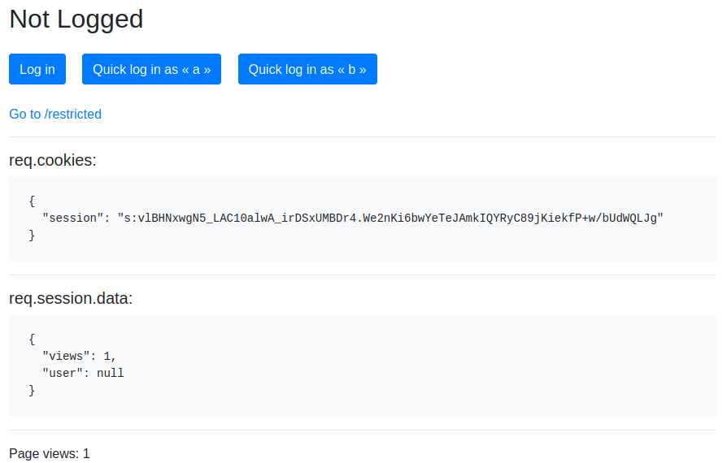
If we click the Log in button we can use :
- login :
a - password :
aaaaaaa
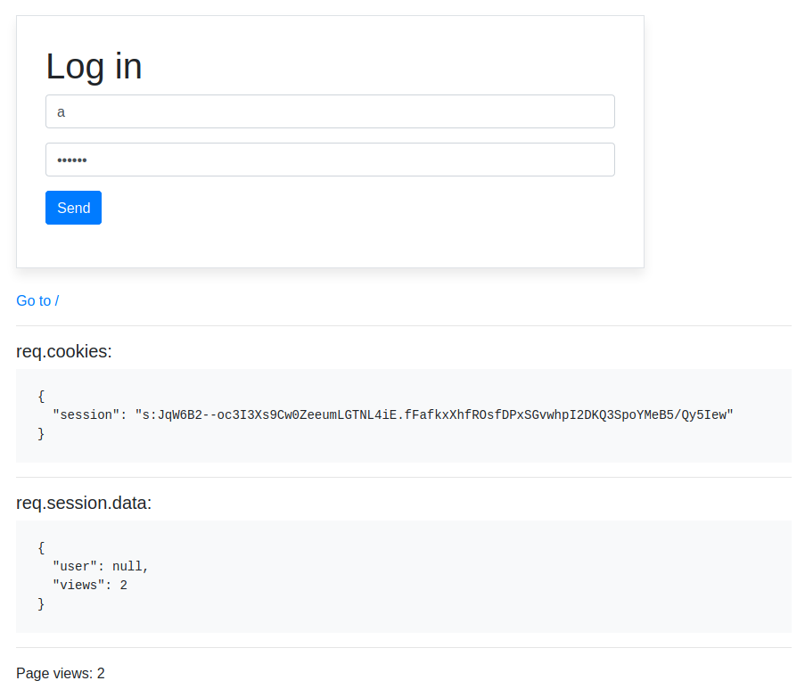
The Cognito identification should work and you should see the logged homepage :
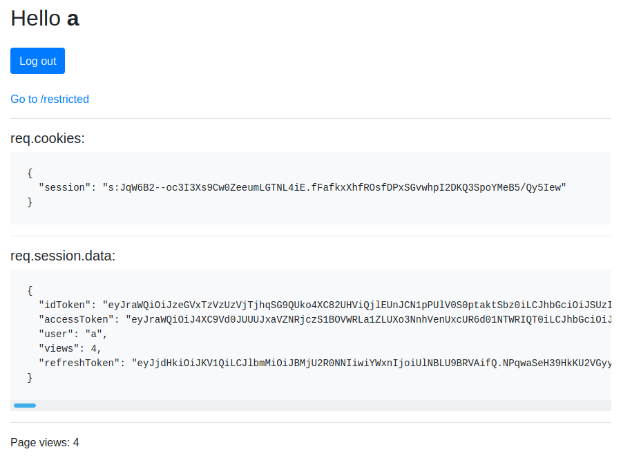
If you click the Go to /rectricted link, you should see this logged /restricted page :
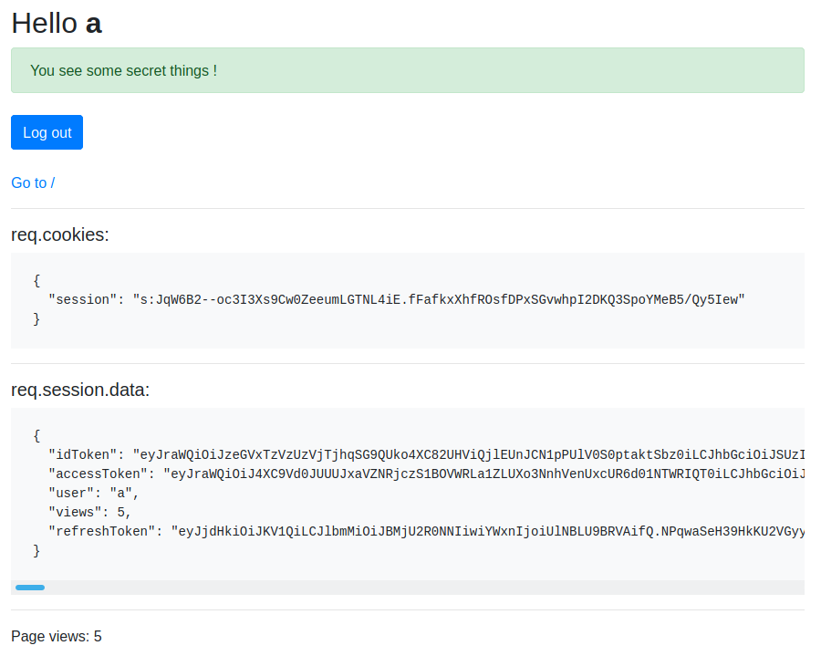
You can play with this demo site in different browsers (regular and incognito mode) and see the different sessions.